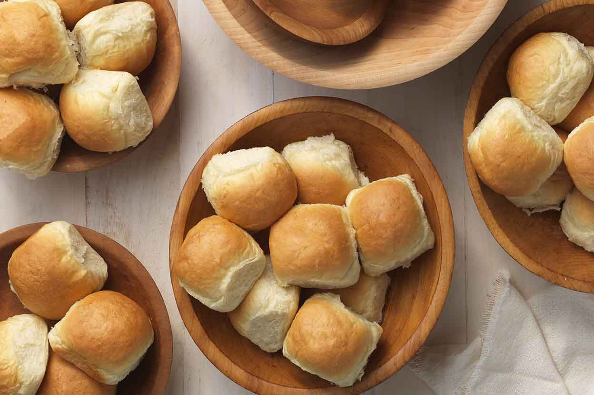

Holiday Food:¶
Dinner Rolls
| Ingredients | Quantity |
|---|---|
| Flour | 2 c |
| Yeast | 1 pack |
| Sugar | 2 TBLSP |
| Salt | 1/2 tsp |
| Milk | 1/2 c |
| Water | 1/4 c |
| Butter | 2 tblsp |
Combine 3/4 cup flour, yeast, sugar and salt in a large bowl. Heat milk, water and butter until warm (around 120 degrees). Add to flour mixture. Beat for two minutes at medium speed with electric mixer, scraping bowl occasionally. Add 1/4 cup flour, beat for another 2 minutes at high speed. Stir in enough remaining flour to make soft dough. Knead on lightly floured surface until smooth and stretchy, about 10 minutes. Cover and let rest 10 minutes.
Divide into 12 different pieces. Cover and let rise for 30 minutes. Bake in 375 degree oven for 20 minutes.

{kind=link}
Holiday Turkey
| Ingredients | Quantity |
|---|---|
| Turkey | 14 lbs |
| Kosher Salt | 1 tsp |
| Pepper | 1 tsp |
| Thyme | 2 tsp |
| Rosemary | 2 tsp |
| Sage | 1 tsp |
| Garlic | 1/2 tsp |
| Olive Oil | 2 tblsp |
Preheat oven to 325. Mix all the dry rub ingredients in a small bowl. Put the turkey on a rack in a roasting pan. Season turkey cavity with salt and pepper to taste. Brush with olive oil and rub with dry rub seasoning mix. Tie the turkey legs together loosely and tuck wings under. Roast for about 3 hours or about 165 degrees. Transfer to platter and let rest for 30 minutes.
{kind=link}
Holiday Sweet Potatoes
| Ingredients | Quantity |
|---|---|
| Parsnips | 2 lbs |
| Broth | 1/2 c |
| Butter | 5 tblsp |
| Brown Sugar | 1/2 c |
| Rosemary | 2 tsp |
| Syrup | 2 tblsp |
| Yams | 2 lbs |
| Cream | 1/4 lb |
| Salt | 3/4 tsp |
| Flour | 1/4 c |
| Pecans | 1/2 c |
Preheat oven to 400 degrees. Add parsnips , 1/4 cup water and yams. Cover and microwave for 15 minutes. Pour broth and cream into the bowl. Use a potato masher to mash to the consistency desired. Stir in butter and salt. Crumb together brown sugar, flour, rosemary and 1/4 tsp salt. Sprinkle mixture over yam mixture and drizzle with chopped pecans and maple syrup.
{kind=link}